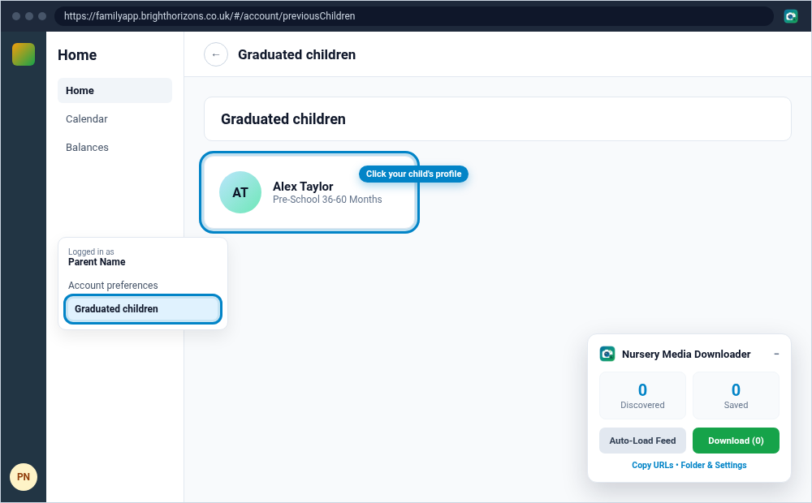
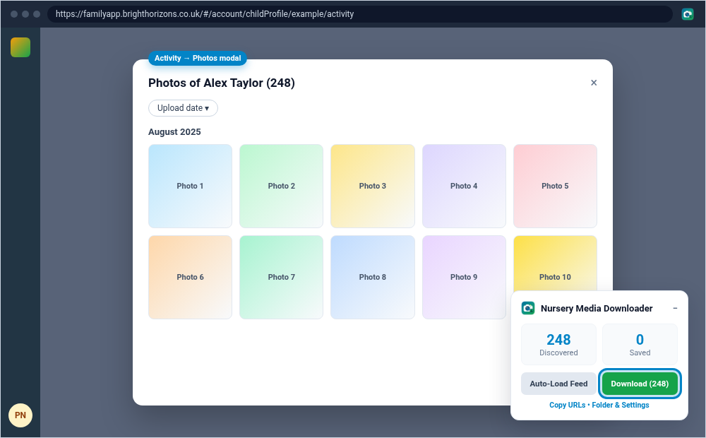
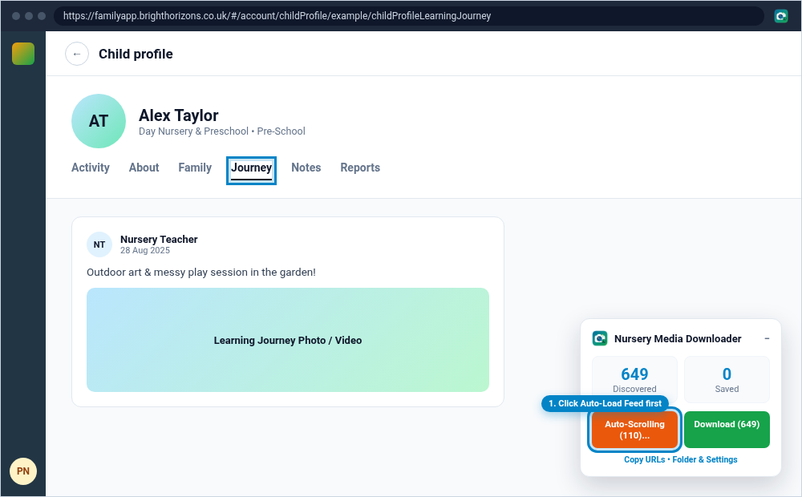
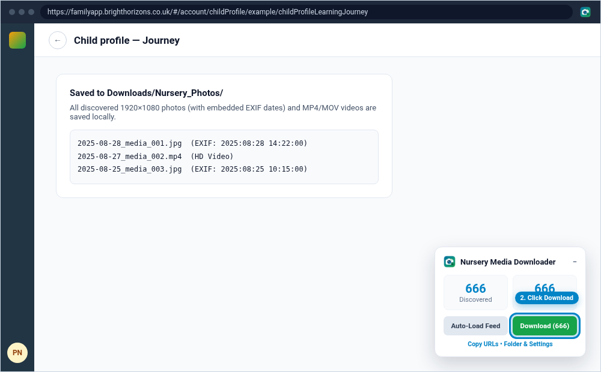

How to Use Nursery Media Downloader
Once you have installed the extension, follow these steps to archive your child's photos and videos.
Step 1: Open Your Child's Profile
Log in to Bright Horizons FamilyApp or Famly and select your child's profile. (If your child has already graduated, open the bottom-left account menu and click Graduated children first.)

Step 2: Choose Activity → Photos or the Journey Tab
From your child's profile, either open Photos in the Activity tab to browse the photo grid, or switch to the Journey tab for full Learning Journey posts and videos.

Step 3: Click Auto-Load Feed in the Journey Tab
In the Journey tab, click Auto-Load Feed in the floating Nursery Media Downloader widget (or toolbar popup). It will automatically scroll and click Load more until all older posts are discovered.

Step 4: Click Download
Click the green Download button to save all discovered 1920×1080 photos (with embedded EXIF capture dates) and MP4/MOV videos directly into Downloads/Nursery_Photos/.

Tips & Options
- Custom Folder & Filenames: Click Folder & Settings in the widget (or open Extension Options) to customize the subfolder name or filename pattern.
- Duplicate Protection: Previously saved items are remembered locally so re-running a download skips files you already have.
- EXIF Dates: JPEG photos automatically receive their post date in
DateTimeOriginalso Apple Photos and Google Photos sort them chronologically.